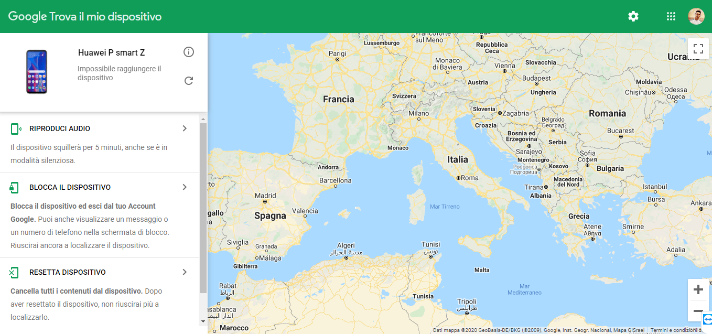

Sicurezza
Bloccare il telefono da remoto
Se si smarrisce il telefono lo possiamo geolocalizzare o bloccare da
questo sito

Non installare applicazioni da siti poco affidabili
Alcune app potrebbero contenere dei virus che potrebbero prendere il completo controllo del telefono.
In alcuni telefoni un antivirus è già preinstallato
Per evitare rischi, consiglio di installare le applicazioni solo dal Play Store.